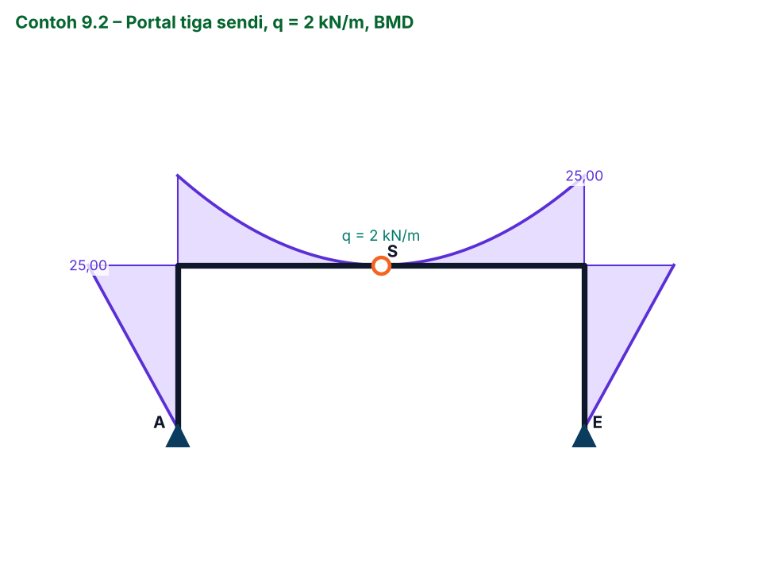
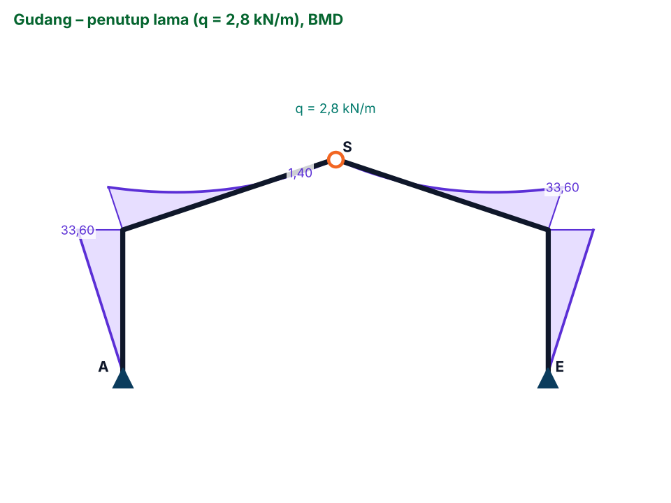

Minggu 10 • Sub-CPMK 3.3 • CPMK-3 • CPL 2 / IK 2.2 • Case Method 3 (bobot 8%) + Tugas & Kuis 2% • Estimasi belajar: 120 menit mandiri + 220 menit kelas/studio
2. Capaian Pembelajaran
Sub-CPMK 3.3: Mahasiswa mampu menganalisis portal tiga sendi gudang.
| Kode | Indikator | Level Bloom |
|---|---|---|
| 3.3.a | Menjelaskan mengapa portal tiga sendi statis tertentu walau memiliki 4 reaksi | C2 – menjelaskan |
| 3.3.b | Menghitung reaksi vertikal dan horizontal (dorongan) portal tiga sendi | C3 – menghitung |
| 3.3.c | Menghitung dan menggambar momen pada kolom dan balok/kaki kuda-kuda | C3–C4 |
| 3.3.d | Menjelaskan dampak perubahan penutup atap terhadap reaksi dan momen | C4 – menganalisis |
| 3.3.e | Memutuskan rekomendasi teknis berbasis hitungan (Case Method 3) | C5 – mengevaluasi |
Kriteria (RPS): reaksi horizontal & momen pada portal tiga sendi tepat; dampak perubahan penutup atap dijelaskan.
3. Peta Konsep Bab
Portal (Bab 8) + sendi dalam (Bab 7) → (9.1) portal tiga sendi: 4 reaksi, 4 persamaan
Persamaan tambahan → ΣM_S = 0 untuk satu bagian → (9.2) dorongan horizontal H
H → momen kolom h·H dan momen balok/kaki kuda-kuda → (9.3) diagram
Beban atap berubah → H, V, M berubah → (9.4) Case Method 3 → Bab 10 (rangka batang)
4. Apersepsi
Kasus nyata: Gudang penyimpanan gabah di Kabupaten Agam memakai portal baja tiga sendi beratap pelana. Koperasi petani ingin mengganti seng yang bocor dengan genteng beton agar gudang lebih sejuk. Tukang berkata: “Rangka bajanya kuat, ganti saja.”
Pertanyaan pemantik: Mengapa kaki portal seperti ini cenderung “membuka” ke luar? Apa yang menahan agar kaki tidak bergeser?
Gambar 9.1. Gudang hasil panen dengan portal tiga sendi (ilustrasi baru, sumber: dokumen penulis)
Teks alternatif: Gudang baja beratap pelana dengan dua kaki portal bersendi di fondasi dan sendi di puncak; panah dorongan horizontal di kaki.
Prompt gambar: Educational illustration of a West Sumatran rural rice storage warehouse with a steel three-hinged gable portal frame, pinned column bases and a ridge hinge highlighted with glowing orange circles, horizontal thrust arrows at the feet, technical style, navy background, no text
5. Uraian Materi
9.1 Konsep Portal Tiga Sendi
Portal tiga sendi memiliki dua tumpuan sendi di kaki (masing-masing H dan V → 4 reaksi) dan satu sendi dalam S, biasanya di puncak atau tengah balok. Menurut Bab 7: r = 4 = 3 + h (h = 1) → statis tertentu.
Empat persamaan yang dipakai: ΣFx = 0, ΣFy = 0, ΣM_A = 0 (seluruh portal), dan ΣM_S = 0 untuk bagian kiri atau kanan saja (karena momen di sendi S nol).
Analogi: dua orang saling bersandar pada puncak kepala. Kaki mereka harus menahan dorongan ke luar agar tidak tergelincir – itulah dorongan horizontal (H) portal tiga sendi.
9.2 Reaksi Vertikal dan Horizontal
ΣM_A = 0 (seluruh portal) → V_E (kaki kanan); ΣFy = 0 → V_A.
Potong di sendi S; ambil bagian kiri (atau kanan). ΣM_S = 0 → H_A (atau H_E).
ΣFx = 0 (seluruh portal) → H lainnya.
Periksa: M di S = 0; ΣM terhadap titik lain = 0.
Keterangan: L = bentang antar-kaki (m); f = tinggi sendi S di atas garis tumpuan (m); q = beban merata terhadap proyeksi horizontal (kN/m). Batasan: kedua tumpuan sejajar (sama tinggi), sendi S di tengah bentang, beban merata penuh dan simetris. Makna: makin landai (f kecil), makin besar dorongan H.

Gambar 9.2. BMD portal tiga sendi Contoh 9.1 (momen nol di S).

Gambar 9.3. BMD portal tiga sendi akibat angin Contoh 9.2.
9.3 Portal Tiga Sendi Beratap Pelana
Pada gudang beratap pelana, kaki kuda-kuda miring dari puncak kolom ke sendi puncak. Prinsip hitungannya sama; tinggi f diukur dari garis tumpuan ke sendi puncak.

Gambar 9.4. BMD portal pelana gudang dengan penutup lama.
9.4 Case Method 3 – Gudang Hasil Panen, Penutup Atap Diganti Genteng Beton
Peran: kelompok sebagai tim teknis dinas pertanian yang diminta koperasi menilai rencana penggantian atap. Waktu: 70 menit (studio lembar kerja) + presentasi 5 menit. Bobot: Case Method 8% + Tugas & Kuis 2% (CPMK-3).
Data kasus (untuk pembelajaran): portal baja tiga sendi seperti Contoh 9.3; jarak antarportal 4 m. Beban per m² proyeksi horizontal: penutup lama (seng + gording) 0,20 kN/m²; genteng beton + reng/usuk tambahan 0,60 kN/m² [PERLU VERIFIKASI data produk]; beban hidup atap 0,50 kN/m² (data kasus). Kapasitas momen izin profil portal 45 kN·m dan kapasitas angkur fondasi terhadap gaya horizontal 12 kN per kaki (data kasus).
Tugas kelompok:
Hitung q per portal untuk penutup lama dan genteng beton (q = beban per m² × jarak portal).
Hitung V, H, dan momen sudut untuk kedua kondisi; gambar BMD.
Bandingkan dengan kapasitas momen (45 kN·m) dan angkur (12 kN).
Usulkan minimal dua alternatif (mis. kembali ke penutup ringan, menambah portal sehingga jarak 3 m, perkuatan sudut) dan hitung salah satunya.
Putuskan rekomendasi akhir dan presentasikan kepada “pengurus koperasi”.
| Kondisi | q (kN/m) | V (kN) | H (kN) | M sudut (kN·m) | Terhadap izin 45 kN·m / 12 kN |
|---|---|---|---|---|---|
| Penutup lama (0,70 kN/m² × 4 m) | 2,80 | 16,80 | 8,40 | 33,60 | 75% / 70% – aman |
| Genteng beton (1,10 kN/m² × 4 m) | 4,40 | 26,40 | 13,20 | 52,80 | **117% / 110% – tidak aman** |
| Genteng beton, jarak portal 3 m | 3,30 | 19,80 | 9,90 | 39,60 | 88% / 83% – aman |
Tabel kunci dosen (dihitung ulang secara numerik; kosong pada versi mahasiswa).

Gambar 9.5. BMD portal pelana setelah diganti genteng beton: momen sudut naik 57% menjadi 52,8 kN·m.
Kunci keputusan: penggantian langsung tidak disetujui (momen 117% dan dorongan angkur 110% kapasitas). Alternatif yang memenuhi: penutup ringan berinsulasi (mis. genteng metal berpasir + peredam panas) atau genteng beton dengan portal tambahan (jarak 3 m) setelah fondasi baru diperiksa. Perkuatan sudut (haunch) perlu perhitungan di Struktur Baja.
6. Contoh Soal & Pembahasan
Tiga contoh (9.1 balok datar beban merata, 9.2 angin, 9.3 pelana) dan tabel Case Method 3, dengan empat BMD dari hasil hitungan.
7. Tanya AI Tutor
Jelaskan lebih sederhana
Jelaskan dorongan horizontal portal tiga sendi dengan analogi dua orang saling bersandar. Tanyakan saya apa yang terjadi bila atap makin landai.
Pendamping Case Method 3
Kami tim teknis gudang koperasi. Jangan beri keputusan. Ajukan 4 pertanyaan agar kami mempertimbangkan momen, angkur, biaya, dan kenyamanan termal.
Periksa jawabanku
Ini persamaan ΣM_S saya: [tempel]. Apakah saya mengambil bagian yang benar dan tandanya tepat?
Buat soal latihan
Buat 2 soal portal tiga sendi (datar dan pelana) dengan beban merata. Sembunyikan jawaban.
Ringkas bab ini
Ringkas Bab 9 dalam 4 langkah menghitung portal tiga sendi.
8. Zona AR – Gudang Portal Tiga Sendi
| Aspek | Spesifikasi |
|---|---|
| Nama objek | ar-bab09-gudang.glb (+ .usdz) |
| Tujuan belajar | Melihat sendi kaki dan puncak, arah dorongan H, dan pengaruh berat penutup atap (indikator 3.3.a, 3.3.d) |
| Pembuatan model | Revit/SketchUp: gudang 12 × 16 m, 5 portal WF, gording, dua pilihan penutup; Blender: animasi; GLB ≤ 10 MB |
| Hotspot & label | (1) Sendi kaki A dan E; (2) Sendi puncak S; (3) Panah V dan H; (4) Sudut dengan momen terbesar; (5) Angkur fondasi |
| Animasi | Tombol “Seng ↔︎ Genteng beton”: panah H dan label momen sudut membesar; tombol “Jarak portal 4 m ↔︎ 3 m” |
| Kode QR | Menuju ar/bab-09.html |
| Cadangan | Gambar 9.4–9.5 dan video 360° |
| Pertanyaan pengamatan | (a) Di mana momen terbesar? (b) Mengapa kaki cenderung membuka ke luar? (c) Bagaimana jarak antarportal memengaruhi beban tiap portal? |
- Sendi puncak S
- Sudut: momen terbesar
- Dorongan H di kaki
Buka halaman AR penuh • Perangkat tanpa AR tetap dapat memutar model 360° dengan jari/tetikus.
9. Alat Hitung – Portal Tiga Sendi
| Aspek | Spesifikasi |
|---|---|
| Tujuan | Reaksi V, H dan BMD portal tiga sendi balok datar atau pelana, beban merata atap dan beban horizontal |
| Rumus | \(\Sigma M_A=0;\ \Sigma F_y=0;\ \Sigma M_S^{kiri}=0;\ \Sigma F_x=0;\ H=\tfrac{qL^2}{8f}\ (\text{simetris})\) |
| Input | L (m; 4–40), tinggi kolom h (m), tinggi sendi puncak f (m; > h untuk pelana, = h untuk datar), q (kN/m) atau beban per m² × jarak portal, angin di puncak kolom (kN) |
| Output | V_A, V_E, H_A, H_E; momen sudut; BMD pada gambar portal; rasio terhadap kapasitas momen dan angkur (opsional) |
| Mode Case Method | “Bandingkan penutup atap”: hingga 3 skenario berdampingan |
| Validasi & fitur | f > 0; peringatan bila V negatif (kaki terangkat); reset; salin; ekspor CSV/PDF/PNG |
| Kasus uji | Input | Hasil yang diharapkan | Rujukan |
|---|---|---|---|
| 1 | Datar: L = 10, h = f = 4, q = 2 | V = 10; H = 6,25; M sudut = 25,00 | Contoh 9.1 |
| 2 | Datar: L = 10, h = 4, angin 5 di B | V_A = –2; V_E = 2; H_A = H_E = –2,5; M sudut = 10,00 | Contoh 9.2 |
| 3 | Pelana: L = 12, h = 4, f = 6, q = 2,8 | V = 16,80; H = 8,40; M sudut = 33,60 | Contoh 9.3 |
| 4 | Pelana: q = 4,4 | H = 13,20; M sudut = 52,80 | Case Method 3 |
10. Studi Kasus / Proyek
Case Method 3 disajikan lengkap di subbab 9.4.
11. Info Penting / Tips Lapangan / Peringatan K3
Ketiga kotak ada di subbab 9.3.
12. Rangkuman
Portal tiga sendi: 4 reaksi, statis tertentu karena sendi S memberi ΣM_S = 0 untuk satu bagian.
Langkah: ΣM_A → V_E; ΣFy → V_A; ΣM_S bagian kiri/kanan → H; ΣFx → H lainnya.
Simetris dengan beban merata: V = qL/2; H = qL²/(8f); momen sudut = H × tinggi kolom.
Atap lebih berat atau lebih landai → H dan momen sudut naik → periksa profil dan angkur.
Keputusan teknis membandingkan beberapa alternatif terhadap kapasitas.
13. Latihan & Kuis Interaktif (11 soal)
Jumlah reaksi tumpuan portal tiga sendi …
Pembahasan: Dua sendi × 2.
Portal tiga sendi statis tak tentu karena memiliki 4 reaksi.
Pembahasan: Sendi S menambah satu persamaan.
Persamaan tambahan portal tiga sendi adalah …
Pembahasan: Momen di S nol.
Portal simetris L = 8 m, f = 4 m, q = 3 kN/m. V = … kN
Pembahasan: 3 × 8 ÷ 2.
Soal no. 4: H = … kN
Pembahasan: 3 × 64 ÷ 32.
Soal no. 4 dengan tinggi kolom 3 m: momen sudut = … kN·m
Pembahasan: 6 × 3.
Beban atap 0,9 kN/m² dan jarak portal 5 m. q per portal = … kN/m
Pembahasan: 0,9 × 5.
Jika tinggi sendi puncak f diperkecil (atap lebih landai), H akan …
Pembahasan: H berbanding terbalik dengan f.
Contoh 9.3 dengan q dua kali lipat: momen sudut = … kN·m
Pembahasan: Linear terhadap q.
Tukang berkata “rangka baja kuat, ganti saja ke genteng beton”. Tanggapan tim teknis yang tepat …
Pembahasan: Lihat tabel Case Method 3.
Rancang jarak antarportal maksimum agar genteng beton (1,10 kN/m² total) aman terhadap momen izin 45 kN·m. Tunjukkan hitungan.
Pembahasan: M = H × 4 = q × 144 ÷ 48 × 4 = 12q ≤ 45 → q ≤ 3,75 kN/m → jarak ≤ 3,75 ÷ 1,10 = 3,41 m. Rubrik: rumus 30, hitungan 40, pembulatan aman & alasan 30.
14. Refleksi Diri
Saya dapat menjelaskan mengapa portal tiga sendi statis tertentu. 1 2 3 4 5
Saya dapat menghitung V dan H. 1 2 3 4 5
Saya dapat menggambar BMD portal tiga sendi. 1 2 3 4 5
Saya dapat memberi rekomendasi atap berdasarkan hitungan. 1 2 3 4 5
Apa yang sudah/belum saya pahami? • Tindak lanjut: skor ≤ 3 → ulangi Contoh 9.1 dengan Alat Hitung, lalu kerjakan soal 11 kuis bersama kelompok.
15. Glosarium dan Referensi Bab
| Istilah | Arti |
|---|---|
| Dorongan horizontal (H) | Reaksi horizontal di kaki portal tiga sendi yang menahan kaki membuka. |
| Haunch | Penebalan/pengaku di sudut portal baja untuk menambah kapasitas momen. |
| Jarak antarportal | Jarak antara dua portal berurutan; menentukan lebar beban atap yang dipikul satu portal. |
| Portal tiga sendi | Portal dengan dua sendi kaki dan satu sendi dalam (puncak). |
| Tie rod (batang tarik) | Batang yang menghubungkan kedua kaki untuk menahan dorongan. |
Hibbeler, R. C. (2024b). Structural analysis (11th ed.). Pearson. (Bab 5: three-hinged frames/arches)
Leet, K. M., Uang, C.-M., Lanning, J. T., & Gilbert, A. M. (2018). Fundamentals of structural analysis (5th ed.). McGraw-Hill. (Bab 6: arches)
Badan Standardisasi Nasional. (2020). SNI 1727:2020 Beban desain minimum dan kriteria terkait untuk bangunan gedung dan struktur lain. BSN.